.JPG)
| 巴生市 Bandar Diraja Klang | |||
|---|---|---|---|
| 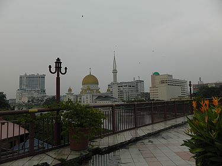 | 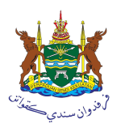 | 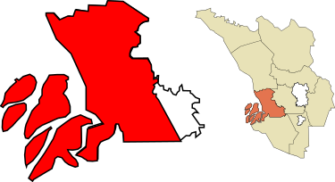 | 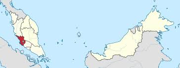 |
| 巴生市景 | 图章 | 巴生市在雪兰莪州巴生县的位置 | 巴生市于马来西亚的位置 |
巴生市（马来语：Klang），是马来西亚雪兰莪州西部的一个城市也是一个巫金，隶属于巴生市议会。其面积为573平方公里，辖区人口于2010年为744,062，市中心人口为240,016。 该市北临瓜拉雪兰莪，东临莎亚南和梳邦再也，南临万津，西临马六甲海峡。巴生距离吉隆坡市中心约32公里。
巴生在马来文里被称为Klang，但在中文却被称为巴生。巴生这名字很明显不是像马来西亚其他地方一样由马来语地名直接音译过来的。有人提出了巴生这词是来自于马来语海水涨潮"Pasang"这一词的音译。这词展现出了巴生河流涨潮时辰对于商人的重要性。
而关于马来语Klang一词的来源，则有两种说法。第一种说法是Kelang听起来像是造船厂里打铁的声音。而第二种说法这是来自于Kilang一词。Kilang在马来语是仓库的意思。由于当年这里有许多仓库，所以就开始叫这里为Kilang，最后演变成今天的Klang。
在史前时代，巴生已经有人居住。《航海图》译吉令;15世纪马六甲王朝宰相敦霹雳在担任宰相前，就曾担任巴生的村长（Penghulu）。1445年，他被任命为马六甲驻巴生的代表。
1641年，荷兰势力取代葡萄牙人后，更积极的把苏拉威西岛的武吉斯人引进雪兰莪。在当时的整个马来半岛仍处于地广人稀的局面，巴生在当时由于马来人与武吉斯人相处融洽，最终原本只是雇佣兵的武吉斯人建立足够的政治势力，在1740年也进入苏丹统治的年代。
就因为权力与资源分配出现不平衡，雪兰莪也出现一场内战。一些人描绘成无关中国劳工，另一些历史资料却写明他们参与，并且内战其实与他们政治势力需要其实是息息相关。
巴生开埠比1856年的吉隆坡更早，一切从武吉斯人占据巴生河口开始。在18世纪，武吉斯权贵拉惹鲁慕受到霹雳苏丹的支持，拥立为雪兰莪苏丹并建立皇室，迄今兴盛不衰，奠定了巴生皇城的地位。
巴生市位于巴生河两岸，距离大海13哩，是当年人民最早沿河登陆的地点，在马六甲王朝时代，是原住民聚居的部落。在初期，人们多数是从事农业和采钖，后来大批中国劳工远来南洋求生，巴生便成了华工进入雪州矿地的据点，丰富的锡矿让当时的经济活动蓬勃起来.
1870年代巴生是个茅草屋的年代。1874年英国参政司选择巴生做为行政中心。1880年代由于巴生于马来西亚地理位置上偏为西边，而行政中心若设于中央地带较易管理，因此便将行政中心迁至吉隆坡。
巴生是雪兰莪州的皇城，盖因在19世纪末前，它一直是雪州的行政中心，直到英国人把行政中心搬到吉隆坡为止。目前雪州苏丹的其中一座皇宫也座落于此，一些皇室的仪式也还在巴生皇宫进行。
巴生港是马来西亚第一大海港，故巴生一带也盛产海鲜。巴生华人以福建人居多，所以福建话（闽南语）是当地的流行方言。巴生以当地小吃肉骨茶而闻名。
巴生市目前建有131所政府资助学校，包括58所国文小学，21所华文小学，13所淡米尔文小学及39所国民型中学。除此之外，巴生也是雪州仅有的4所中文独立中学的所在地。
巴生最为闻名的食物莫过于肉骨茶，它与新加坡口味的肉骨茶的分别在于其浓烈的药材味，而新加坡肉骨茶则偏重胡椒味。此外巴生火车站附近有许多美食，比如叶记香蕉叶咖喱饭，中国酒店和桥底盛发肉骨茶等等。巴生南区驰名美食地点聚集在班达马兰，有摇摇冰，肉骨茶，菜包,炸鸡和印度煎饼等等。
|
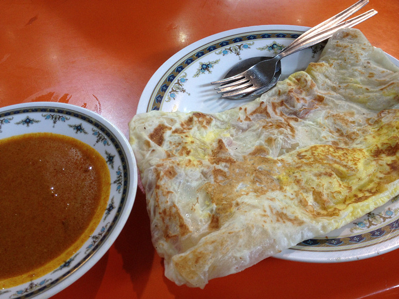 | 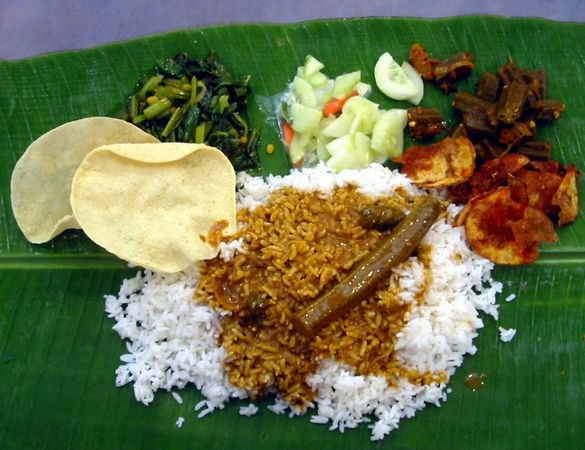 |
| 肉骨茶 | 印度煎饼 | 香蕉叶咖喱饭 |
2017年是巴生旅游年，而巴生拥有很多旅游景点，可以通过免费的精明巴士畅游大部分旅游景点。
雪兰莪州精明巴士（简称SMART）每天从上午6时到晚上10时，提供22个车站包括巴生站、观音亭等，还有各大宗教建筑林立。可以通过巴生站附近的（KLG 3）SMART站搭乘巴士，主要景点有:
-巴生火车站
-白宫
-阿南沙皇宫
-兴都庙
-班达马兰体育馆
-金泉路
-观音亭
-消防局
-小印度
阿南沙皇宫位于巴生南区皇宫路（Jalan Istana），阿南沙皇宫建于1950年，取代旧皇宫（Mahkota Puri Palace） 。皇宫部分区域开放给公众参观，但是只在特定时间开放而已。 附近有巴生皇家城市公园(Taman Bandar Diraja Klang),苏丹苏莱曼体育场(Stadium Padang Sultan Sulaiman)以及巴生皇家俱乐部。
| 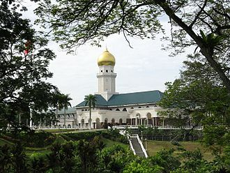 | 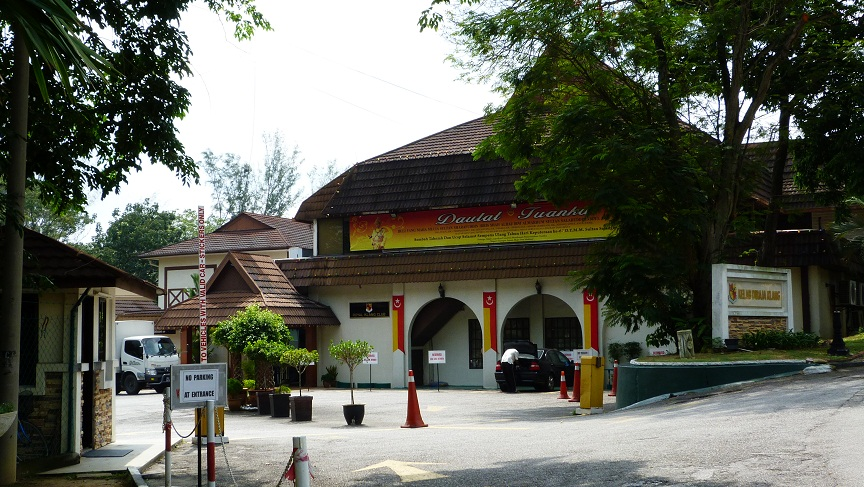 |
| 伊斯坦娜·阿拉姆·莎 (Istana Alam Shah) |
苏丹苏莱曼体育场 (Stadium Padang Sultan Sulaiman) |
建于1928年,位于巴生南区林茂街（印度街）。教堂设计为哥特式建筑，为巴生最古老的天主教堂之一
| 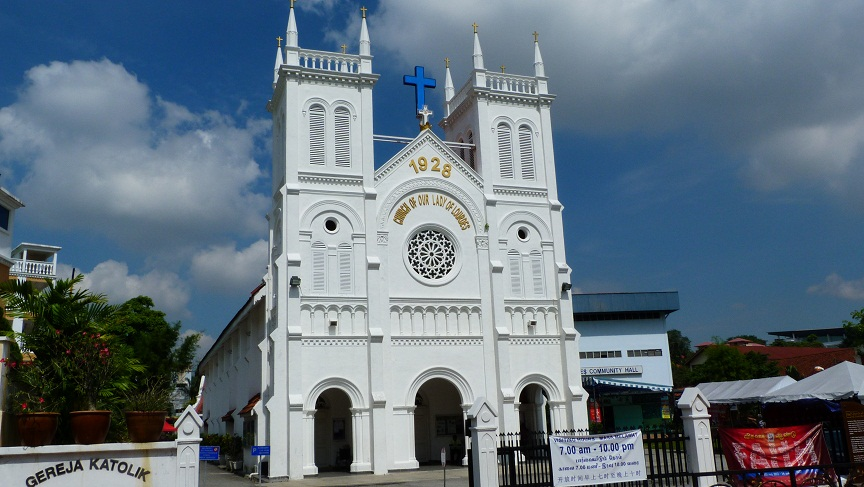 |
| 巴生露德圣母天主教堂 (Church of Our Lady of Lourdes) |
巴生观音亭见证巴生发展已经一个世纪了。观音亭位于五条路（Simpang Lima）的Jalan Barat Daya。观音亭由巴生19乡团理事会管理，它也是马来亚最早的寺庙之一。观音亭建于1892年 ，其也是巴生华社的信仰中心，经常举办各种慈善活动。
| 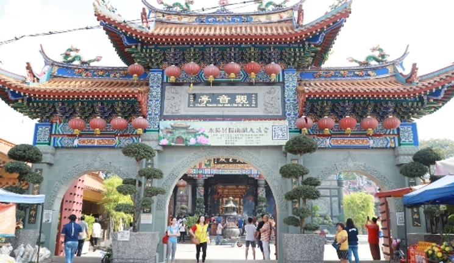 |
| 巴生观音亭 |
苏丹阿都阿兹皇家展览馆（白宫）（Sultan Abdul Aziz Royal Gallery），建于1909年，曾是英国和日本殖民办事处，马来亚独立后成为地方政府办公室，目前展示已故苏丹沙拉胡丁（第十一任马来西亚最高元首）的收藏。
| 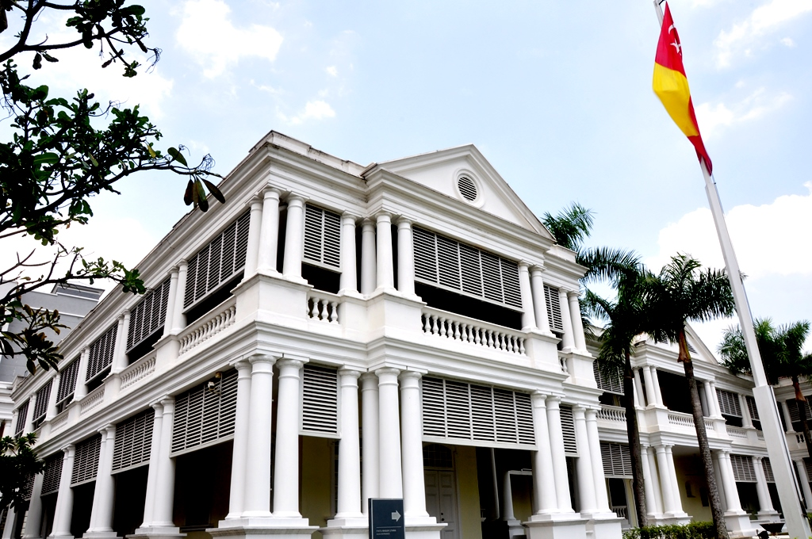 |
| 巴生白宫 （Bangunan Sultan Sulaiman） |
建于1890年，为当时雪兰莪铁路的其中一站，目前成为KTM通勤铁路巴生港线的其中一个车站，为巴生人民提供电气化铁路服务，未来可能会成为万达镇 - 巴生线的其中一站。附近有一间“中国酒店”咖啡店，是一件充满南洋风情的咖啡店。其对面的后街（Jalan Stesen 1）有一间超过70年历史的德地肉骨茶，为巴生第一家肉骨茶店，还有海南饭、潮州清粥小菜、新式咖啡馆，可谓美食爱好者的好去处。
| 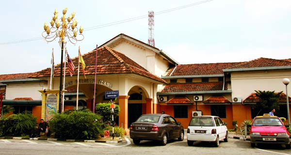 |
| 巴生火车站 |